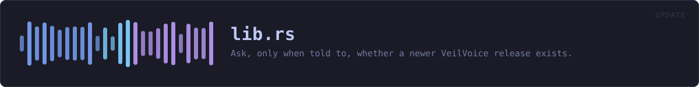

crates/veilvoice-update/src/lib.rs
veilvoice-update · 536 lines · read the source
Ask, only when told to, whether a newer VeilVoice release exists.
What this is, and the claim it changes
Until this crate existed, VeilVoice's front page said "no telemetry, no update check". Half of that is unchanged and half of it is not, and the wording moved in the same commit as the code rather than afterwards:
- No telemetry. Unchanged, and nothing here sends anything about you. The request is a plain
GETof a public URL that anybody can open in a browser; it carries no identifier, no configuration and no counter. - **No automatic update check.** Nothing runs on a timer, at startup, or in the background.
checkruns because a person pressed a button in this run of the program, and it does nothing else ever.
An update checker that runs by itself is a beacon: it tells a server that this machine has VeilVoice on it, roughly how often it is used, and from which address. That is the thing being refused. A button somebody presses, once, when they want to know, is a different act with different consequences, and it is the only one on offer.
There is still no HTTP client in the dependency graph
This crate has no dependencies. It runs the transfer tool the operating system already ships, exactly as veilvoice-verify has fetched releases since it existed, and reads its output. cargo tree shows no reqwest, no hyper, no ureq; the CI job that fails the build if one appears is unchanged and still passes.
The tool is found at an absolute path, never by bare name. Resolving a program by name on Windows searches the current directory before most of PATH, so a file called curl.exe sitting beside the program would be run instead of the system one. That is finding F-13, and it does not get to happen twice.
What it will not do
It does not download a release, it does not install anything, and it does not restart the program. It reports a version string and leaves every decision to the reader. Downloading a release and checking its signature is veilvoice-verify's job, and that is a separate, deliberate act too.
An update checker that could install its own answer is an update checker that can be made to install somebody else's.
What a "newer version" is worth here
The answer comes from a public web page over TLS. That is enough to say "there is probably something newer, go and look" and it is not enough to act on: a name in a document is not a signature. Nothing in this crate verifies anything, and Report::caveat says so in the words the user sees rather than only in this comment.
In plain words
This is the "check for updates" button, and nothing else.
It runs when you press it and at no other time. There is no timer and nothing in the background, because a program that checks by itself is telling somebody else's computer that yours exists and how often you use it.
It reads a public page anybody can open, tells you the newest version number, and stops there. It does not download anything and it does not install anything.
WHAT THIS FILE CONTAINS
536 lines defining 8 functions (4 public), 4 types and 8 constants. Everything below is read out of the source, so it cannot disagree with the code.
The types it owns.
enum Verdictline 95 — How this build's version compares with the newest published one.struct Reportline 112 — What a check found.enum Errorline 136 — Why a check could not be completed.struct Toolline 271 — Where a transfer tool was found, and how to drive it.
What happens when it runs. These are the ways in: public, and nothing else in this file calls them, so they are what an outside caller reaches first.
Report::caveatline 127 — What this answer is worth, in the words the user should see.checkline 173 — Ask whether anything newer than current has been published.
reachesfetch,find_tool,report,tag_in,parse
WHAT CALLS WHAT
The functions this file defines, and the calls between them. An edge means the callee's name appears, called, inside the caller's body — a syntactic reading, not a type-resolved one.
The same graph as Mermaid source
%%{init: {"theme":"base","themeVariables":{"background":"#1a1b26","primaryColor":"#1f2335","primaryTextColor":"#c0caf5","primaryBorderColor":"#7aa2f7","secondaryColor":"#16161e","tertiaryColor":"#16161e","lineColor":"#737aa2","textColor":"#c0caf5","mainBkg":"#1f2335","nodeBorder":"#7aa2f7","clusterBkg":"#16161e","clusterBorder":"#2f3549","fontFamily":"ui-monospace, SFMono-Regular, Consolas, monospace","fontSize":"14px"}}}%%
flowchart TD
n_caveat(["Report::caveat<br/>line 127"])
n_fmt["Error::fmt<br/>line 146"]
n_check(["check<br/>line 173"])
n_report["report<br/>line 184"]
n_parse["parse<br/>line 210"]
n_tag_in["tag_in<br/>line 245"]
n_find_tool["find_tool<br/>line 277"]
n_fetch["fetch<br/>line 315"]
n_check --> n_fetch
n_check --> n_find_tool
n_check --> n_report
n_check --> n_tag_in
n_report --> n_parse
click n_caveat href "https://github.com/tilas01/veilvoice/blob/main/crates/veilvoice-update/src/lib.rs#L127" "open the source"
click n_fmt href "https://github.com/tilas01/veilvoice/blob/main/crates/veilvoice-update/src/lib.rs#L146" "open the source"
click n_check href "https://github.com/tilas01/veilvoice/blob/main/crates/veilvoice-update/src/lib.rs#L173" "open the source"
click n_report href "https://github.com/tilas01/veilvoice/blob/main/crates/veilvoice-update/src/lib.rs#L184" "open the source"
click n_parse href "https://github.com/tilas01/veilvoice/blob/main/crates/veilvoice-update/src/lib.rs#L210" "open the source"
click n_tag_in href "https://github.com/tilas01/veilvoice/blob/main/crates/veilvoice-update/src/lib.rs#L245" "open the source"
click n_find_tool href "https://github.com/tilas01/veilvoice/blob/main/crates/veilvoice-update/src/lib.rs#L277" "open the source"
click n_fetch href "https://github.com/tilas01/veilvoice/blob/main/crates/veilvoice-update/src/lib.rs#L315" "open the source"
classDef entry fill:#1f2335,stroke:#7aa2f7,color:#c0caf5
class n_caveat,n_check entry
classDef api fill:#1f2335,stroke:#7dcfff,color:#c0caf5
class n_report,n_tag_in api
classDef helper fill:#1f2335,stroke:#bb9af7,color:#c0caf5
class n_fmt,n_parse,n_find_tool,n_fetch helperThis site loads no third-party script, so it cannot run Mermaid; the diagram above is the same nodes and edges drawn by the generator instead. GitHub renders the source below directly.
ITEMS
| Item | Line | Documentation |
|---|---|---|
REPO pub const | 74 | The repository asked about. |
LATEST_URL pub const | 81 | The page fetched. |
RELEASES_URL pub const | 84 | Where releases are listed, for somebody doing this by hand. |
TIMEOUT pub const | 91 | How long the transfer tool is given before it is given up on. |
Verdict pub enum | 95 | How this build's version compares with the newest published one. |
Report pub struct | 112 | What a check found. |
Report::caveat pub fn | 127 | What this answer is worth, in the words the user should see. |
Error pub enum | 136 | Why a check could not be completed. |
Error::fmt fn | 146 | |
VERSION pub const | 167 | The version this build was compiled as. |
check pub fn | 173 | Ask whether anything newer than current has been published. |
report pub fn | 184 | Compare two version strings and build the report. |
parse fn | 210 | 1.2.3 or v1.2.3 as three numbers. |
tag_in pub fn | 245 | The tag in whatever the transfer tool printed. |
NULL_DEVICE const | 265 | This platform's bit bucket, for a reply whose body is not wanted. |
NULL_DEVICE const | 268 | This platform's bit bucket, for a reply whose body is not wanted. |
Tool struct | 271 | Where a transfer tool was found, and how to drive it. |
find_tool fn | 277 | Absolute paths only. |
fetch fn | 315 | Run the tool and hand back what it printed. |
SCOPE pub const | 373 | What this crate does and does not do, in one paragraph, for a front end to show beside the button. |